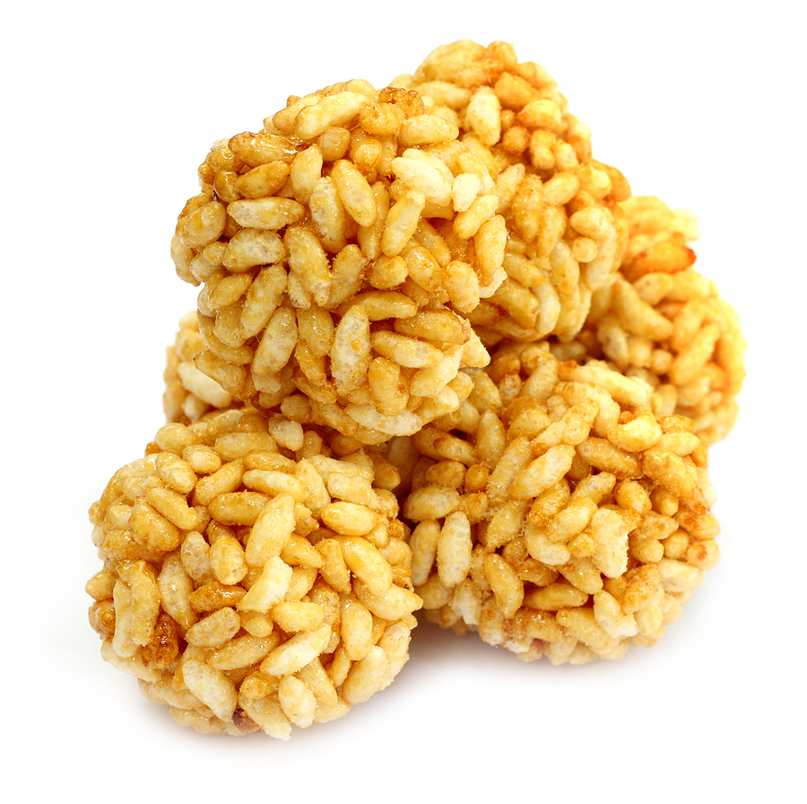

Mamra na ladu |
| Rateing |
| prep time:20 minit |
| cook time:20 minit |
| total time:40 minit |
|  |
Ingredients: |
150 gm Mamra
250 gm Jaggery
½ tbsp Ghee
|
Instructions: |
| Roast mamra. Heat ghee in a pan at slow flame. Add shredded jaggery and cook till color change and appears thick. Add roasted mamra in it. Mix well. Remove from flame. Make ladoo shape from mixture. Mamra ladoo is ready for serve. |
video: |